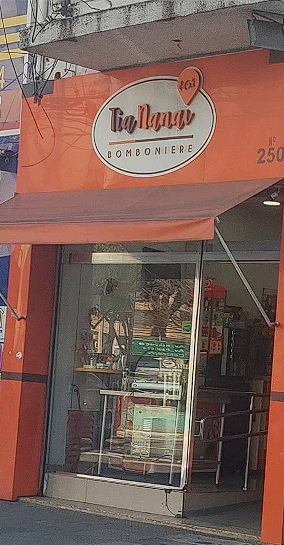
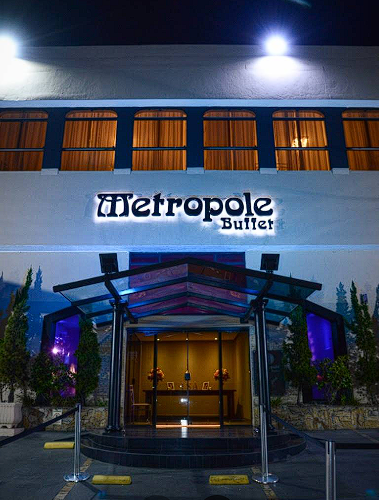

Minhas Férias
Aqui nesta página, irei expor um pouco da minha rotina durante o período de férias, relatando como foi o
final de 2025, e o primeiro mês de 2026
Tive a oportunidade de estar presente em alguns Cultos na Congregação Cristã, do Bairro do Limão

Também, a Feitura de uma landing page de uma empresa chamada "GMRD", de desenvolvimento de
softwares.
Ademais, trabalhei de Segunda a Sexta em uma Bomborniere, na Av Doutor Arnaldo.

Outrossim, participei sendo Garçom de algumas festas aos sábados, como freelancer.
